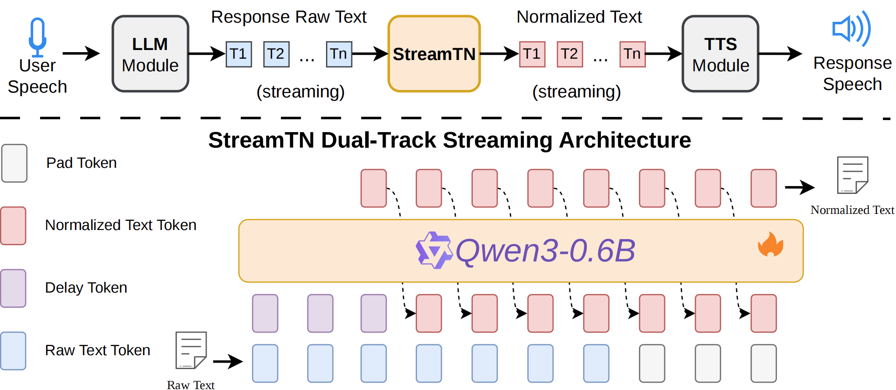

StreamTN
A Low-Latency Streaming Chinese Text Normalization Model for Streaming TTS in Dialogue Systems
Abstract Text-to-Speech (TTS) is an essential module that provides spoken responses in an LLM-centered spoken dialogue system (SDS). To ensure accurate TTS synthesis, responses generated by an LLM must be converted into TTS-readable formats via a Text Normalization (TN) module, imposing strict low-latency requirements in real-time SDS scenarios. Existing TN solutions are largely rule-based, rely on manual engineering, and generalize poorly to unseen patterns. Although an LLM itself can perform TN through prompt engineering, it faces key limitations: high first-token latency due to non-streaming processing, hallucination risks, and degraded intelligence or reasoning when the core LLM module is fine-tuned solely for TN. To address these challenges, we propose StreamTN, a lightweight LLM-based Chinese streaming TN model. Built on Qwen3-0.6B, StreamTN employs a dual-track streaming framework in which input tokens and output tokens are processed on two parallel tracks, enabling low-latency real-time inference without complex prompting. Moreover, task-specific fine-tuning yields superior TN performance and fewer hallucinations than rule-based systems and general-purpose LLMs. We also introduce a TN benchmark that spans diverse text scenarios, providing a comprehensive evaluation standard for speech generation in spoken dialogue systems. Experiments demonstrate the effectiveness of StreamTN in accuracy and inference latency.
This page is for research demonstration purposes only.
System Overview

Figure 1. The architecture of our proposed StreamTN model.
Case Studies
Integers and Decimals
| Input Text | Reference Normalization | StreamTN Output | WeTextProcessing Output | Raw Audio | StreamTN Audio |
|---|---|---|---|---|---|
| 实验室温度计显示-273.15℃ | 实验室温度计显示负二百七十三点一五摄氏度 | 实验室温度计显示负二百七十三点一五摄氏度 | 实验室温度计显示负两百七十三点一五摄氏度 | ||
| 电脑的售价是4899元，比原价便宜200元。 | 电脑的售价是四千八百九十九元，比原价便宜二百元。 | 电脑的售价是四千八百九十九元，比原价便宜二百元。 | 电脑的售价是四千八百九十九元，比原价便宜两百元。 |
Ordinal Numbers
| Input Text | Reference Normalization | StreamTN Output | WeTextProcessing Output | Raw Audio | StreamTN Audio |
|---|---|---|---|---|---|
| 本次马拉松比赛的第2名选手因伤退赛，冠军由第3名递补获得。 | 本次马拉松比赛的第二名选手因伤退赛，冠军由第三名递补获得。 | 本次马拉松比赛的第二名选手因伤退赛，冠军由第三名递补获得。 | 本次马拉松比赛的第两名选手因伤退赛，冠军由第三名递补获得。 | ||
| 在年度排名中，第2名的得分与第4名相差百分，差距显著。 | 在年度排名中，第二名的得分与第四名相差百分，差距显著。 | 在年度排名中，第二名的得分与第四名相差百分，差距显著。 | 在年度排名中，第两名的得分与第四名相差百分，差距显著。 |
Phone Numbers
| Input Text | Reference Normalization | StreamTN Output | WeTextProcessing Output | Raw Audio | StreamTN Audio |
|---|---|---|---|---|---|
| 配送电话13109826543，请注意接听 | 配送电话一三一零九八二六五四三，请注意接听 | 配送电话一三一零九八二六五四三，请注意接听 | 配送电话幺三幺零九八二六五四三，请注意接听 | ||
| 如需了解活动详情，请拨打14785236901进行咨询。 | 如需了解活动详情，请拨打一四七八五二三六九零一进行咨询。 | 如需了解活动详情，请拨打一四七八五二三六九零一进行咨询。 | 如需了解活动详情，请拨打幺四七八五二三六九零幺进行咨询。 |
Time
| Input Text | Reference Normalization | StreamTN Output | WeTextProcessing Output | Raw Audio | StreamTN Audio |
|---|---|---|---|---|---|
| 日落将在19:23分准时出现 | 日落将在十九点二十三分准时出现 | 日落将在十九点二十三分准时出现 | 日落将在十九比二三分准时出现 | ||
| 演出将在8:45开始，请提前入场并关闭手机以免影响他人。 | 演出将在八点四十五分开始，请提前入场并关闭手机以免影响他人。 | 演出将在八点四十五分开始，请提前入场并关闭手机以免影响他人。 | 演出将在八点四十五分开始，请提前入场并关闭手机以免影响他人。 |
Military Passwords
| Input Text | Reference Normalization | StreamTN Output | WeTextProcessing Output | Raw Audio | StreamTN Audio |
|---|---|---|---|---|---|
| 敌军在405高地部署了重武器，准备发起攻击。 | 敌军在四洞五高地部署了重武器，准备发起攻击。 | 敌军在四洞五高地部署了重武器，准备发起攻击。 | 敌军在四零五高地部署了重武器，准备发起攻击。 | ||
| 任务编号为3017，开始行动 | 任务编号为三洞幺拐，开始行动 | 任务编号为三洞幺拐，开始行动 | 任务编号为三千零一十七，开始行动 |
Capital Amounts
| Input Text | Reference Normalization | StreamTN Output | WeTextProcessing Output | Raw Audio | StreamTN Audio |
|---|---|---|---|---|---|
| 发票金额显示为贰仟叁佰元整，需重新核对。 | 发票金额显示为二千三百元整，需重新核对。 | 发票金额显示为二千三百元整，需重新核对。 | 发票金额显示为贰仟叁佰元整，需重新核对。 | ||
| 客户账户余额显示为叁万捌仟元整，请及时核对 | 客户账户余额显示为三万八千元整，请及时核对 | 客户账户余额显示为三万八千元整，请及时核对 | 客户账户余额显示为叁万捌仟元整，请及时核对 |
Physical Units
| Input Text | Reference Normalization | StreamTN Output | WeTextProcessing Output | Raw Audio | StreamTN Audio |
|---|---|---|---|---|---|
| 手机电池的容量是3000mAh，续航能力不错。 | 手机电池的容量是三千毫安时，续航能力不错。 | 手机电池的容量是三千毫安时，续航能力不错。 | 手机电池的容量是三千米Ah，续航能力不错。 | ||
| 旅行包的容量是30L，足够装下一周的衣物和日常用品，适合短途旅行，尤其是周末出游。 | 旅行包的容量是三十升，足够装下一周的衣物和日常用品，适合短途旅行，尤其是周末出游。 | 旅行包的容量是三十升，足够装下一周的衣物和日常用品，适合短途旅行，尤其是周末出游。 | 旅行包的容量是三十L，足够装下一周的衣物和日常用品，适合短途旅行，尤其是周末出游。 |
Chemical Formulas and Equations
| Input Text | Reference Normalization | StreamTN Output | WeTextProcessing Output | Raw Audio | StreamTN Audio |
|---|---|---|---|---|---|
| 在298K时，AgBr的溶度积Ksp=5.0×10⁻¹³，其溶解平衡为AgBr(s) ⇌ Ag⁺ + Br⁻，该平衡常用于控制AgBr的沉淀与溶解 | 在二百九十八开尔文时，溴化银的溶度积Ksp等于五点零乘以十的负十三次方，其溶解平衡为溴化银固体可逆生成银离子和溴离子，该平衡常用于控制溴化银的沉淀与溶解 | 在二百九十八开尔文时，溴化银的溶度积Ksp等于五点零乘以十的负十三次方，其溶解平衡为溴化银固体可逆生成银离子和溴离子，该平衡常用于控制溴化银的沉淀与溶解 | 在二九八K时，AgBr的溶度积Ksp等于五点零乘十⁻¹³，其溶解平衡为AgBr(s) ⇌ Ag⁺ 加 Br⁻，该平衡常用于控制AgBr的沉淀与溶解 | ||
| 在晶体结构中，NaCl晶胞为面心立方结构，每个晶胞包含4个Na⁺和4个Cl⁻，晶胞参数为a = 564 pm，晶格能为787 kJ/mol，表明其具有较强的离子键。 | 在晶体结构中，氯化钠晶胞为面心立方结构，每个晶胞包含四个钠离子和四个氯离子，晶胞参数为a等于五百六十四皮米，晶格能为七百八十七千焦每摩尔，表明其具有较强的离子键。 | 在晶体结构中，氯化钠晶胞为面心立方结构，每个晶胞包含四个钠离子和四个氯离子，晶胞参数为a等于五百六十四皮米，晶格能为七百八十七千焦每摩尔，表明其具有较强的离子键。 | 在晶体结构中，NaCl晶胞为面心立方结构，每个晶胞包含四个Na⁺和四个Cl⁻，晶胞参数为a 等于 五六四 pm，晶格能为七八七 kJ/mol，表明其具有较强的离子键。 |
Daily Chemicals
| Input Text | Reference Normalization | StreamTN Output | WeTextProcessing Output | Raw Audio | StreamTN Audio |
|---|---|---|---|---|---|
| 烘焙饼干时，加入的NaHCO₃受热分解，生成CO₂气体使饼干松软。 | 烘焙饼干时，加入的碳酸氢钠受热分解，生成二氧化碳气体使饼干松软。 | 烘焙饼干时，加入的碳酸氢钠受热分解，生成二氧化碳气体使饼干松软。 | 烘焙饼干时，加入的NaHCO₃受热分解，生成CO₂气体使饼干松软。 | ||
| 洗衣粉中的Na₂CO₃能中和水中的Ca²⁺和Mg²⁺，提高洗涤效果。 | 洗衣粉中的碳酸钠能中和水中的钙离子和镁离子，提高洗涤效果。 | 洗衣粉中的碳酸钠能中和水中的钙离子和镁离子，提高洗涤效果。 | 洗衣粉中的Na₂CO₃能中和水中的Ca²⁺和Mg²⁺，提高洗涤效果。 |
Simple Mathematical Equations
| Input Text | Reference Normalization | StreamTN Output | WeTextProcessing Output | Raw Audio | StreamTN Audio |
|---|---|---|---|---|---|
| 若x=3，则x⁴=81，x²=9，x³=27 | 若x等于三，则x的四次方等于八十一，x的平方等于九，x的三次方等于二十七 | 若x等于三，则x的四次方等于八十一，x的平方等于九，x的三次方等于二十七 | 若x等于三，则x⁴等于八十一，x²等于九，x³等于二十七 | ||
| 计算体积V=½×10×5×4=100cm³ | 计算体积V等于二分之一乘十乘五乘四等于一百立方厘米 | 计算体积V等于二分之一乘十乘五乘四等于一百立方厘米 | 计算体积V等于½乘十乘五乘四等于十零立方厘米 |
Fractions and Percentages
| Input Text | Reference Normalization | StreamTN Output | WeTextProcessing Output | Raw Audio | StreamTN Audio |
|---|---|---|---|---|---|
| 调查显示约2/3的受访者支持环保政策 | 调查显示约三分之二的受访者支持环保政策 | 调查显示约三分之二的受访者支持环保政策 | 调查显示三分之约二的受访者支持环保政策 | ||
| 报告显示，75%的用户对产品表示满意。 | 报告显示，百分之七十五的用户对产品表示满意。 | 报告显示，百分之七十五的用户对产品表示满意。 | 报告显示，百分之七十五的用户对产品表示满意。 |
Years and Dates
| Input Text | Reference Normalization | StreamTN Output | WeTextProcessing Output | Raw Audio | StreamTN Audio |
|---|---|---|---|---|---|
| 2025年国际人工智能大会将在上海召开 | 二零二五年国际人工智能大会将在上海召开 | 二零二五年国际人工智能大会将在上海召开 | 二零二五年国际人工智能大会将在上海召开 | ||
| 2021年夏季奥运会申办城市名单确定 | 二零二一年夏季奥运会申办城市名单确定 | 二零二一年夏季奥运会申办城市名单确定 | 二零二一年夏季奥运会申办城市名单确定 |
Amount Readings
| Input Text | Reference Normalization | StreamTN Output | WeTextProcessing Output | Raw Audio | StreamTN Audio |
|---|---|---|---|---|---|
| 她买了一件衣服，价格是£150.75，还购买了配饰。 | 她买了一件衣服，价格是一百五十点七五英镑，还购买了配饰。 | 她买了一件衣服，价格是一百五十点七五英镑，还购买了配饰。 | 她买了一件衣服，价格是一百五十点七五英镑，还购买了配饰。 | ||
| 这本书的价格是€23.5，比原价便宜了，因为促销活动。 | 这本书的价格是二十三点五欧元，比原价便宜了，因为促销活动。 | 这本书的价格是二十三点五欧元，比原价便宜了，因为促销活动。 | 这本书的价格是二十三点五欧元，比原价便宜了，因为促销活动。 |
Complex Mathematical Equations
| Input Text | Reference Normalization | StreamTN Output | WeTextProcessing Output | Raw Audio | StreamTN Audio |
|---|---|---|---|---|---|
| 设 f(x) = ∫₀ˣ e⁻ᵗ² dt / log(√x + 1)，求x→0时的极限 | 设函数 f(x) 是分子从零到x的定积分e的负t平方次方dt，分母是自然对数x开平方加一，求x趋近于零时的极限 | 设函数 f(x) 是分子从零到x的定积分e的负t平方次方dt，分母是自然对数x开平方加一，求x趋近于零时的极限 | 设函数 f(x) 是分子从零到x的定积分e的负t平方次方dt，分母是自然对数x开平方加一，求x趋近于零时的极限 | ||
| 2×2矩阵行列式det([[a,b],[c,d]])=ad−bc | 2乘2矩阵的行列式等于a乘d减b乘c | 2乘2矩阵的行列式等于a乘d减b乘c | 2乘2矩阵的行列式等于a乘d减b乘c |
Delay Frame Analysis
The latency results reported in this table are measured during inference on a single NVIDIA A6000 GPU. Qwen3-32B is used as the upstream text model to provide streaming input tokens. No additional acceleration is introduced, and all results are obtained using the original inference implementation to ensure fair comparison. The setting marked with * corresponds to the delay configuration used in our final StreamTN model.
| Strategy | Delay Frame | F1 | Accuracy | FPD (ms) |
|---|---|---|---|---|
| Non-Streaming | - | 0.8868 | 0.8870 | - |
| Streaming | 1 frame | 0.5859 | 0.5872 | 75 |
| 2 frames | 0.7247 | 0.7221 | 121 | |
| 4 frames * | 0.8191 | 0.8202 | 213 | |
| 8 frames | 0.8435 | 0.8441 | 394 | |
| 16 frames | 0.8178 | 0.8191 | 756 |